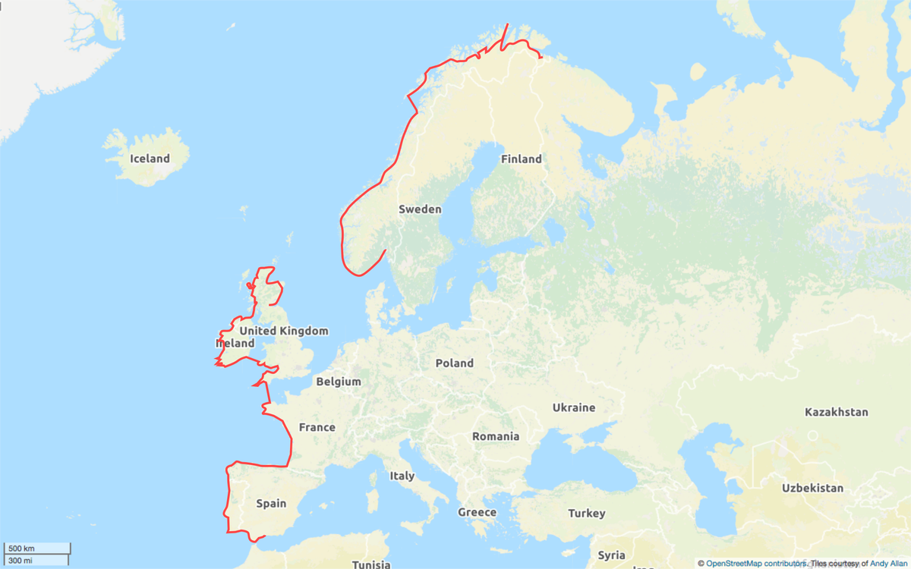

It turned out the bike I saw at Oslo wasn't
mine. It belonged to Canute, a Norwegian
teacher who has been cycling the Norwegian
coastline in stages. This part was his last
one.
After I'd got my bike back together,
we cycled together towards Kirkenes. We'd
both seen the same campsite on the map.
When we arrived the reception was closed
and Canute was able to call a number in
Norwegian to ask what to do. We were told
we could pay at 10am which was a bit late
for both of us but we had little choice.
We
both pitched our tents, chatted over
dinner, and then had a walk up the hill
behind the campsite to admire the 11pm Sun
and the view. Canute was a great person to
have met. Being a teacher who teaches
Norwegian to foreigners and asylum seekers
meant he was quite a worldly person who
could explain peculiarities of Norway to
me. I was so lucky to have met him.
As Canute had predicted, I had difficulty sleeping in the midnight sun and had to be woken the next morning at 9.30 by Canute. I quickly packed up, we paid, and headed into Kirkenes. With Canute's help I bought gas for my stove and food supplies for the next few days. A lady at the surprisingly big shopping centre asked me where i was going and did a double take when i said "Spain". We had a little conversation and it turns out Kirkenes translate as "Church on the Ness" which I pointed out was almost Scottish (in Scotland a kirk is a church).
Stocked up, we then headed to the outskirts of Kirkenes and said our goodbyes. I wished him "God Tur" (Norwegian for "have a good journey") and started my ride to the north.
It was an early start this
morning. Having packed up all my belongings
and stored them with friends (thanks Noel
and Anne) and family, I had spent the night
at my sister's. This morning she made me
porridge, we said our goodbyes, then she
waved me off.
I rode down to Leeds
station to get the 06:52 train to
Manchester airport. I'd booked ahead to get
a space for my bike but it turned out it
was full of luggage and none of the owners
wanted to shift them. So I had to stand
with my bike for an hour and a half. So
much for getting some extra sleep on the
train.
At Manchester airport I had to pack
my bike into the huge transparent plastic
bag for the flight. I sat for ages trying
to get the left-hand pedal off. I tried
turning both ways but just couldn't budge
it. Just as I rang a friend for advice, a
guy who'd been in the queue came over and
offered a hand. Tom, it turns out, does
mountain bike training and he managed to
loosen it. Thanks Tom.
After finally
getting the bike packed (with bubble wrap
over important parts) and my panniers
combined into my Ikea bag, I took
everything to special baggage. There I met
a couple of parkrunners from back home. It
turned out they were off to do the midnight
marathon in Tromso and were on the same
flight to Oslo. It's a small world
(although my legs disagree).
On the flight
I was sat next to a young couple. One of
the guys had an old film camera he'd picked
up on eBay for £3. Apparently you can
still get film developed at Boots. Who
knew? It is great to see they are still
getting used but I'm not sure I'd swap my
DSLR for one. Half my kit would end up
being rolls of film.
Touching down at Oslo
airport the scenery said Norway. The hills,
the houses, the forests of tall spruce
trees stretching up to touch us. After a
few hours at Oslo airport I took my second
flight on to Kirkenes. A lady at the help
desk pronounced it "chirk-i-ness" but
various tannoy announcements said it
differently so I'm none the wiser. Rather
concerningly, as I borded the plane I
glimpsed a bike under the plane but it
wasn't in a bike bag. Was it mine? I
couldn't quite tell. Had something happened
to it? Was I going to be stranded with a
broken bike? Perhaps I had nothing to worry
about. Perhaps someone else was cycling the
route. I hoped that was the answer as I
nervously drank the little cup of tea they
gave me on the flight.
Kirkenes is pretty
much the end of Norway. A few miles further
and you're in Russia. But that isn't where
I'm going. For the next four days I head
northward and westward to Nordkapp. The
plan is to reach it by the Summer Solstice
so that I'm at my most northern point at
the same time as the Sun. After that both
of us head south.
So, I have over 500km of
remote countryside to go in four days. I'll
start tomorrow so that I have chance to
find supplies in Kirkenes. Most importantly
I'll need some gas for my camp stove and
food. Plenty of food.
The plan is still on. My previous post described an idea for a route. Since then I've decided to cross the North Sea from Bergen to Orkney (or Aberdeen) rather than head to Oslo. It keeps me on the Atlantic coast more and I'd not fully appreciated just how long Norway was. With a month to go, I've now started getting everything together.
Clothing
One of my old Howies long-sleeved merino base layers has worn out. It did well as I had it for a few years before cycling across two continents with it. The holes are now just too big. Thankfully I still have one left with smaller holes. They are great as they wick the sweat, take a while to start to smell (thanks to the merino), keep my arms from getting sunburned, and somehow keep me warm or cool whichever is needed. Still, only having one will mean I smell more on this trip.
Camping
I'll be (hopefully) doing more camping than on the last two trips. I hope to keep to under £20/day on this trip and that includes flights and all the ferries. As accommodation is always the largest expense, I'll be doing more wild camping - especially in the wilds of Norway/Scotland - to help keep costs down. I'm still massively impressed by the USD8/day Parry - who I met in Utah - had spent crossing the US.
I still have my camping gear from the previous trips which includes my trusty little DoE-approved 1-2 person tent (you'd have to be quite friendly for two). I've bought a new bike bag for the flight to Kirkenes as that will also double up as the ground sheet for my tent. I like things to have multiple uses if possible. I should probably invest in some new tent pegs as I've slowly lost or bent too many of the ones I had.
Electronics
Electronic kit
On my first trip the biggest headache was my phone; it needed charging every single day. In 2015 I bought a new phone specifically to improve the battery life for the Liverpool to Istanbul trip. It worked. I can now get 2-7 days of life from my phone if I switch stuff off when I don't need it. Hopefully the EU roaming directive should kick in around 17th June so I should be able to use my UK mobile in Norway without paying crazy amounts. Unless Brexit has scuppered that.
My camera is quite bulky but gives much better photos than my phone. I have two batteries for it and they last ages because they don't need to power a display screen (it is an SLR). I have a tiny USB charger for the batteries.
My Garmin eTrex 20 GPS claims around 25 hours on 2 AA batteries and, in practice, that has meant 3 days of cycling. I have some rechargeable batteries but AA are really easy to buy in many countries.
On the last trip I bought two USB battery packs, on the road, which proved to be really useful and meant I wasn't always searching for a power outlet. I've bought another USB battery pack with a higher capacity to add to those. I've also decided to increase my power generation so, as well as the roll up Bear Grylls solar panel I bought in Nebraska, I have a new RavPower fold-up solar panel. I should be fine for power.
I've purchased a £7 on-the-go SD card reader which will mean I can now transfer photos off my camera onto my phone. Previously I've had to wait until I've found someone kind enough to let me use their computer to do that. I'll be self-sufficient now. I'll also be able to backup my GPS tracks onto my phone.
Bike
I replaced my gears on my bike a few months ago so they should be OK. The Schwalbe Marathon Plus tyres were new on before crossing Europe in 2015 so will hopefully last a good few thousand more miles. As long as they last me to Scotland I'll be happy. They are excellent tyres. I will need to get some new brake pads (and spares for Norway) as well as a couple of spare inner tubes. I'm wondering if I should take some spare spokes this time in case bike shops are even more spaced out than in the American west.
Flights
My flights to Kirkenes are booked. I fly on 16th June. I just need to add my bike on as excess baggage for an extra £30. I am still trying to decide if I should book a flight from Bergen at the moment or wait until I have a better idea how long Norway will take to cycle once I've experienced it.
Getting ready
I really can't afford to pay £1800 rent whilst I'm away so I've given my notice to my landlord. It'll be much cheaper to put everything in storage. It'll mean I have to find somewhere to live again when I return. That is a problem for then.
I still need to sort out specialist travel insurance, sort out travel money, get my mapping sorted, and pack up my home. I'm also signed up to do my first triathlon in three weeks time so the next month will be busy. The nervousness, the excitement, and the anticipation are building. I'm looking forward to it.
In 2014 and 2015 I followed Thomas Stevens' cycle rides of 1884 and 1885 across the US and Europe. At Istanbul I said goodbye and wished him well on his trip around the world (130 years in the past). Now, two years later I've decided to set out on a new adventure.
Whilst crossing Europe in 2015 I was interested to find out about the Eurovelo routes that criss-cross the continent. One of them caught my eye particularly. It was Eurovelo-1 and it described itself as the "Atlantic Coast Route". I've always been attracted to the rugged Atlantic Coast. I'm not really sure why. I grew up about as far from the coast as you could be in the north of England. Unfortunately, Eurovelo-1 doesn't quite stay true to the coast. It cuts off some of the best bits of Scotland and heads across the middle of the Iberian peninsula. If I was going to cycle the Atlantic coast of Europe, I was going to keep to the coast as much as possible.
Last year, once my fears about geo-politics came true, I realised I'd have to get a move on and do this trip in 2017 if it was going to happen at all. So, the plan became more urgent. Eurovelo-1 is billed as 5000 miles so it will be longer than the US (4293 miles in 99 days) and Europe (2888 miles in 60 days). I'm giving myself between 3 and 4 months to do it in.
The plan (at the moment) is to fly to Kirkenes, Norway some time around mid June and get to the northern-most point of Norway for the Summer Solstice. Then follow the coast all the way to Oslo. At that point I need to somehow get across to Aberdeen (TBD). I then follow the coast of Scotland up to John O'Groats and around the west coast before getting the ferry from Campbeltown to Ballycastle (bikes are free!). Then around the coast of Northern Ireland (taking in Giant's Causeway) and the Republic of Ireland to Rosslare. There I take a ferry over to Fishguard, cycle the south Wales coast and around Devon and Cornwall (via Land's End). Then I'll probably take a ferry from Plymouth to Roscoff in Brittany before cycling down the west coast of France to Spain. At this point I may end up on the northern route of the Camino de Santiago. I'll then cycle down through Portugal and back into Spain to reach the southern tip - Tarifa. After that I'll probably carry on to Gibraltar (because it isn't far) then fly back from Malaga (I can get a cheap flight home).
A vague plan
That is the plan. It is deliberately less of a planned itinerary than I had on the last two trips. This time it'll be my own route and timings rather than those of a man dealing with the roads of 130 years earlier. I'll be able to adapt more. It'll be sad not to have Stevens as my guide but I'll take him along with me for this new adventure.